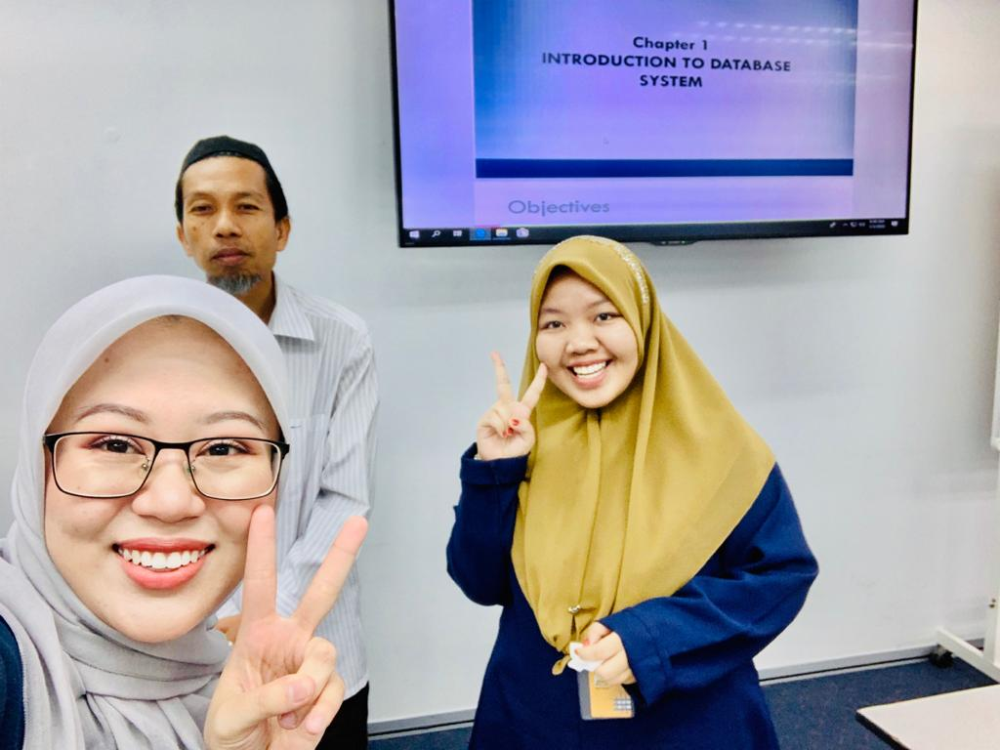
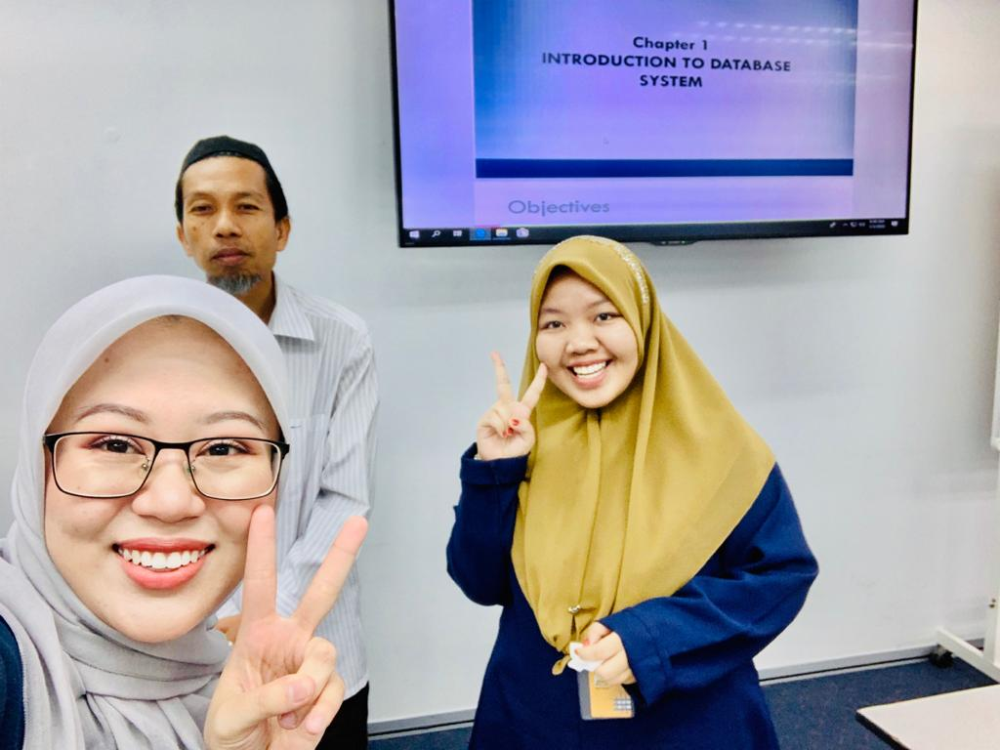
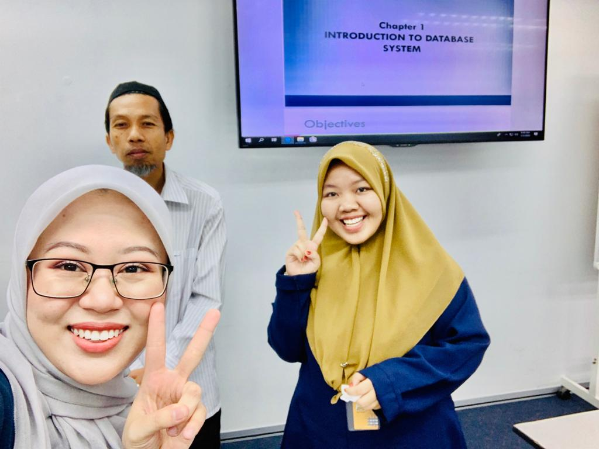

LEFT: Those are my good friends who lives in Kelantan and studies at UiTM Kota Bharu, Kelantan.
CENTER: Those are my best friends. Although we can only be together in 1 semester at UiTM Puncak Alam, but our friendship is the best thing I had.
RIGHT: These are all my classmates. Usually, we eat together after class.
LEFT: This is a short video I recorded. YOU CAN PLAY IT! ENJOY!. As I wrote before, I love to cook. YES! I cooked it by myself just for my family.
CENTER: Obviously STARBUCKS. I really enjoy the taste and aroma of coffee. Every sip is very valuable especially when it comes to custom-made coffee like the coffee in the picture.
RIGHT: It is my favorite dessert (PAVLOVA). I really don’t like cakes but I can’t stand any kind of pavlova. As long as it is pavlova.

LEFT:Those 2 lecturers were from UiTM Dungun. They were my previous lecturers (DIPLOMA). We kept in touch until now.They really treated me well. This photo was taken when they came to Kota Bharu and they wanted to see me in person. We kept changing ideas and gave support to each other. I'm really tocuhed and thankful to both of them because they really remebered me well.#appreciatelecturer
CENTER: He is one of my fathers in UiTM KB. He always give me positive spirit. He teach me to be kind to all our surroundings. Then, you'll be success and happy. Everytime I saw him, he will smile and said goodluck tasya. In return, I cook for him because he loves and trust my food (appertizer to dessert) from last semester.#appreciatelecturer
RIGHT: He is my ITS lecturer for previous semester. He's known as Dr. Amri but I called him 'USTAZ' and he didn't mind at all. HAHA. Actually, it happened when I mispronounced his name and suddenly I called him 'USTAZ'. I still remember when I called him Ustaz, he laughed and said "you can called me ustaz if you want it too". Until now, I kept calling him Ustaz instead of Dr.Amri. This picture was taken when he said in our group whatsapp that he cancelled his class but suddenly he said he wanted to continue his class for that day. Ended up, there were Adilah and me only who attended his class on that day.#appreciatelecturer